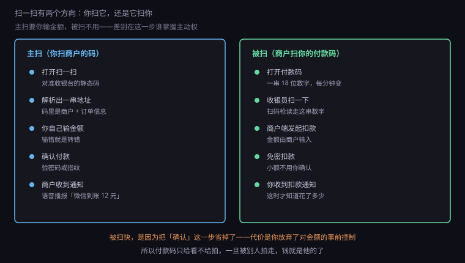
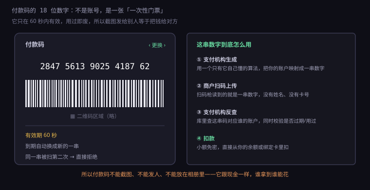
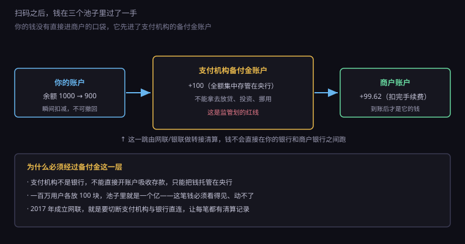

约 0.35 万字 · 3 张图 · 一个黑白方块骗过了全世界，还顺手改写了支付行业
先破一个误解：二维码不是"支付码"，它就是一个能装几百个字节的容器。
它的原理很朴素。一个方块被划成几十乘几十的格子，每个格子黑或白， 黑是 1，白是 0。三个角上有定位图案，让摄像头知道这是码、朝哪边、 怎么摆正。剩下的格子里装着数据和纠错码。
纠错码是关键。二维码有四个纠错等级，最高等级下， 即使码被挡住 30%，依然能读出来。 这就是为什么二维码中间可以放一个 logo—— 挡住的那部分，靠纠错算法补回来了。这和硬盘、光盘用的思路是同一套： 用冗余换容错。
那么商户贴在墙上的那张码里，装的到底是什么？ 大多数情况下，装的是一串网址。
你用手机扫它，系统识别出这是一个 URL，然后打开它。 这个 URL 指向支付机构的一个页面，链接里带着商户编号。 支付 App 拦截到这个域名，就知道"这是付款请求"，直接跳到付款界面， 不用真的打开浏览器。
所以你扫的不是"钱的地址"，是"一张写着'我要收钱，我是谁'的名片"。 钱怎么走，是支付机构在你打开页面之后才决定的。
这也解释了一件事：二维码可以被伪造。 因为它只是一个网址，谁都可以生成一个指向自己账户的码，贴在别人的收银台上。 这是扫码支付最大的安全弱点，后面会专门讲。
扫码支付有两条完全不同的路，很多人一直混着用，却不知道它们的安全模型相反。

主扫：你打开扫一扫，对着收银台的码。 这时候主动权在你手上——金额是你自己输的，密码是你自己按的。 缺点是慢，而且容易输错。
被扫：你打开付款码，收银员用扫码枪扫你。 金额是收银员在它的系统里输入的，你只负责出示。 这时候你放弃了事前控制，换来的是速度——不用输金额、不用按密码。
这两条路的风险完全不一样：
主扫的风险在"码是假的"。你看到的是商户的招牌， 扫到的却可能是别人贴上去的码，钱直接进了骗子的账户。
被扫的风险在"码被偷看"。你的付款码在有效期内就是钱， 谁拍到谁就能花。所以很多地方的扫码枪都放在你手能够到、 但旁人看不到的位置。
顺带说一个细节：被扫时商户可以输入任意金额， 这意味着它理论上可以多扣你的钱。 之所以没人大规模这么干，是因为每一笔都有记录、可申诉、可追责， 而且支付机构的风控会盯着异常商户。 但这也解释了一个常见骗局： 有人在闲鱼上卖东西，让买家"出示付款码"，然后扫走一笔比约定金额大得多的钱。
付款码看起来是一串数字，其实是一张一次性门票。

它的工作方式是这样的：
第一步，支付机构生成这串数字。 它不是你的账号，也不是卡号，而是一个临时令牌。 支付机构的数据库里有一张映射表：这串数字 → 你的账户。
第二步，商户扫码上传。 扫码枪读到的就是这 18 位数字，没有任何别的信息。 所以商户拿不到你的账号，也拿不到你的姓名。
第三步，支付机构反查并校验。 它查这张映射表，同时检查三个条件：这串码是否在有效期内、 是否已经被用过、发起请求的商户是否合法。
第四步，扣款。 小额免密，直接从你的余额或者绑定的银行卡里扣。整个过程两三秒。
为什么是 60 秒？因为太短了不好用（用户还没打开就过期）， 太长了不安全（被拍到的风险窗口变大）。 这个数字是体验和安全之间试出来的平衡点。
而且它是用过即废的。同一串码被扫第二次，系统会直接拒绝。 这叫防重放——和上一节讲的转账流水号是同一个思路： 每个一次性凭证只能消费一次。
所以如果有人拍下你的付款码，它必须在 60 秒内用掉，而且只能用一次。 这也是为什么"拍付款码"这种骗局往往要求视频通话—— 骗子要的是实时画面，不是截图。
付款码能被扫走钱，是因为它默认开了免密支付。 这背后有一整套额度规则。
银行卡的小额免密免签，单笔上限通常是 1000 元， 单日累计也有限额。在这个额度内，刷卡、挥卡、扫码都不用输密码。 超过额度，就必须验证。
为什么敢这么设计？三个原因：
一是风险可控。 单笔 1000 以内，即使被盗刷，损失有上限。 而且银行承诺"免密交易被盗可赔付"，把损失兜住了。
二是概率极低。 免密交易的风控模型会盯着异常： 短时间内多笔、异地、非常用商户，一旦触发就要求验证。 真正被盗的案子，比例低到可以用赔付覆盖。
三是体验值钱。 排队结账时，输密码那几秒会显著降低通行效率。 便利店、地铁、食堂这些场景，免密几乎是刚需。
这套逻辑和信用卡的"免密免签"是一样的： 用可控的小额风险，换大量的效率提升。 但对个人来说，意味着你要自己管好那 1000 元的敞口—— 关掉免密、设置更低的限额、或者干脆不给付款码截图。
现在看钱的路径。它比你想象的绕。

第一步，你的余额减 100。这一步是即时的，发生在支付机构的账本里。
第二步，这 100 元进了支付机构的备付金账户。 注意，这笔钱不是支付机构的营收，它只是"替用户保管的钱"。 监管要求这笔钱 100% 存进央行指定的账户，支付机构自己不能动。
第三步，通过网联或银联做转接清算，把钱划到商户的收单机构。
第四步，商户的账户加 99.62，扣掉的那 0.38 是手续费。
为什么非要经过备付金这一层，不能让钱直接从你的银行到商户的银行？
因为支付机构不是银行。它没有吸收存款的牌照， 不能像银行那样"开账户、收存款、放贷款"。 它只能做一件事：替你把钱转出去。 而"转出去"这件事，必须有清算机构见证，否则就是一笔糊涂账。
备付金账户的意义在于：让这一大池子用户的钱，始终在监管视线里。 假设一千万用户各放 100 块在钱包里，池子里就是一个亿。 如果没有集中存管，这一个亿可以被拿去投资、放贷、甚至卷走。 2010 年代真的出过这样的事，所以后来才有了硬规定。
在 2017 年之前，扫码支付的清算走的是另一条路：直连。
所谓直连，就是支付机构直接跟每一家银行谈接口、开账户。 用户从 A 银行的钱包付给 B 银行的商户，钱在支付机构自己的体系里就完成了划转， 央行看不到中间的过程，只能看到它在各家银行的账户余额变化。
这套模式效率极高，但问题也明显： 清算过程不透明。钱在体系里绕了几圈、绕给谁了、 有没有被挪用，监管没法逐笔看见。 这既是反洗钱的风险，也是系统性风险。
2017 年 8 月，网联成立。它的定位很明确： 所有非银行支付机构的网络支付业务，必须通过网联转接清算， 切断支付机构与银行的直连。
这件事在行业里叫"断直连"。效果是： 每一笔扫码支付的资金流，都要在网联留一道记录。 效率略微下降，成本略微上升，但整条链路变得可审计。
这跟银行卡世界的"四方模式"是同一个思路： 发卡方和收单方之间，必须有一个中立的清算机构， 不能私下直接结算。 银联是给银行卡做这件事的，网联是给支付账户做这件事的。
回到二维码最原始的那个弱点：它只是一张纸。
一家小饭馆把收款码贴在墙上，用的是一张打印的静态码。 骗子趁人多的时候，把自己的一张码贴上去覆盖住。 顾客扫码付款，钱进了骗子的账户，饭馆一分没收到。
这种案子每年都有，金额不大，但极难追回—— 因为顾客确实付了钱，饭馆确实没收到，两边都是受害者。
对抗的办法有三个层次：
技术层：用动态码。商户的码每次生成都带订单号， 付完立刻失效，贴一张假码没用——因为假码对应的订单不存在。 现在大部分连锁店用的收银机扫顾客，就是这个逻辑。
规则层：2021 年之后，监管规定个人静态收款码 原则上不能用于经营性收款，商户要用商户码，需要营业执照和实名认证。 这直接把"贴一张个人码就开店"这条路堵住了。
习惯层：付款前看一眼收款方名称。 你付给"张某某"和付给"某某餐饮有限公司"，风险完全不同。 这一步很土，但有效。
所以扫码支付的安全，从来不是靠二维码本身多难破解—— 它压根不需要破解，复制一张纸的成本是一毛钱。 安全靠的是动态令牌 + 实名商户 + 事后可追溯这三层。
二维码是日本人原昌宏 1994 年发明的，最初用于汽车零件管理。 他没有为它申请专利，理由是"这个技术应该让所有人免费使用"。
但真正把二维码变成全民支付工具的，是中国。 这件事的原因不在技术，在基础设施的空白。
发达国家刷卡体系太成熟了。美国人均三张信用卡， 商户的 POS 机普及到每一个小摊，刷卡体验已经很顺。 要让他们改用扫码，得先说服商户换设备、说服用户改习惯，收益不明显。
而中国在 2010 年代初，银行卡普及率不高，小店装 POS 机要成本、 要押金、要按笔收费。扫码只需要一张打印纸，零成本。 于是它绕过了"刷卡基础设施"这一整层，直接跳到了手机上。
这在技术史上叫蛙跳（leapfrogging）： 落后的地方因为没有旧包袱，可以一步跨过中间形态。 非洲跳过固定电话直接进移动通信，印度跳过 PC 直接进智能手机， 中国跳过信用卡直接进扫码支付，都是同一类现象。
这也是理解技术演化的一个好角度： 最强的技术不一定赢，阻力最小的路径才会赢。